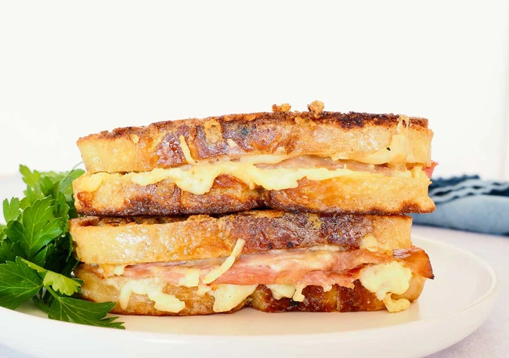

Monte Cristo-Style Ham Sandwich
This is a perfect way to use up leftover ham from holiday meals!

Forms page
MONTE CRISTO STYLE HAM SANDWICH
| This is a filling sandwich. You could even make it for dinner with a side salad. Or brunch with a sweet glaze |
INGREDIENTS
- 4 eggs
- 1 Tbs (15 mL) milk or water
- Pinch salt
- 240 g Gruyere cheese, grated or thinly sliced
- 8 slices bread, sourdough or brioche preferably
- To coat mayonnaise
- 4-8 slices leftover ham
- To coat Dijon mustard
- 2-3 Tbs (30-45 mL) olive oil
- 2-3 Tbs butter
INSTRUCTIONS
- In a medium-sized shallow dish crack eggs and whisk to break up the yolks. Add the milk or water and salt and whisk until fully combined.
- Lay the bottom slices of bread on your work surface and coat with mayonnaise.
- Add 30 g of cheese and spread evenly across the bread. Lay the ham slices on top of the cheese. Add the next 30 g of cheese on top of the ham.
- Coat the top slice of bread with Dijon mustard and close sandwich.
- Preheat a large frying pan over medium heat. Add half the butter and olive oil to the pan.
- Gently place sandwiches in the egg mixture and turn to coat both sides. Add sandwich to the pan and cook 4 minutes on each side. Cheese should be fully melted and the outside toasty brown. Remove from frying pan. Continue with same procedure until all sandwiches are cooked. You can keep the sandwiches warm in the oven (on warm or the lowest temperature) while you cook the rest of the sandwiches.
INSTRUCTIONS
Calorie Sheet
|
| Sr.No. |
Food Item |
Quantlty |
Calorie Value |
| Boiled eggs | 1 | 125 |
NOTES
Sweet garnish options: bourbon maple syrup glaze and a dusting of powdered sugar
Savoury garnish options: your favourite smokey barbecue sauce and picked red onions
If you don’t want to use eggs, use softened butter to coat the outside of the bread and sauté like you would a grilled cheese. So good!